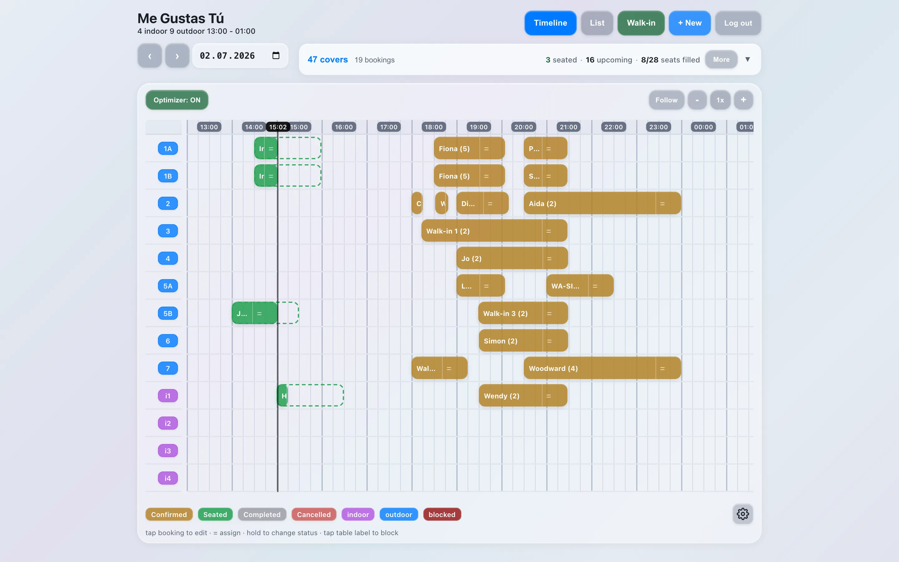
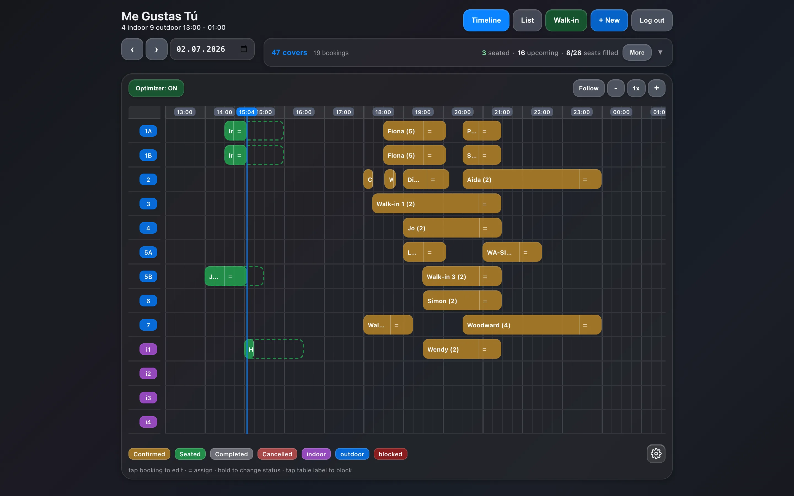

Live in production
MGT Bookings
Sole developer & owner · v15.8.1
A staff-facing restaurant reservation system in active daily use at a 13-table restaurant in the Canary Islands. Full product lifecycle: requirements, data modelling, UI design, deployment, and iterative refactoring.
- 128 commits
- 3 tagged releases
- React 19 · Vite
- Firebase RTDB + Auth
- Vercel CI/CD
- Diagnosed a real data-loss incident and designed a write-guard pattern to prevent recurrence
- Directed a multi-phase refactor from monolith to modular hooks and components
- Encoded real-world constraints: table-clustering rules, per-cluster capacity, seating-displacement protection
- In progress: WhatsApp booking intake parsed by an LLM via serverless functions

